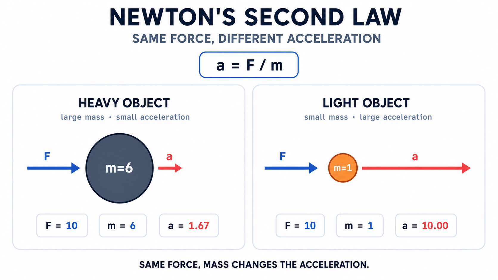
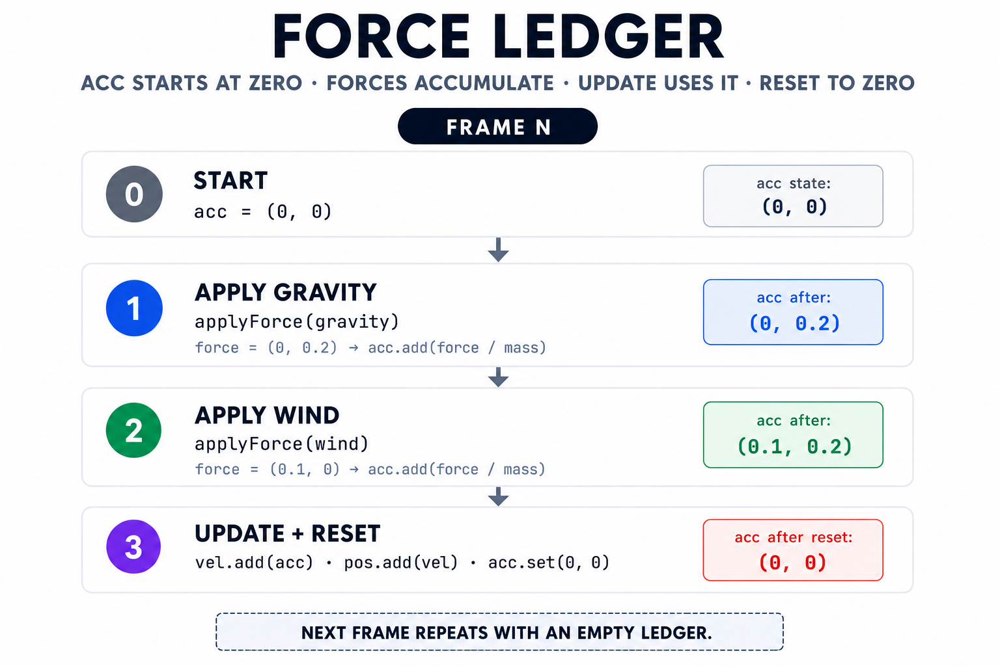
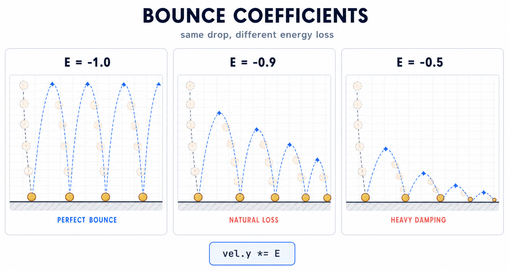
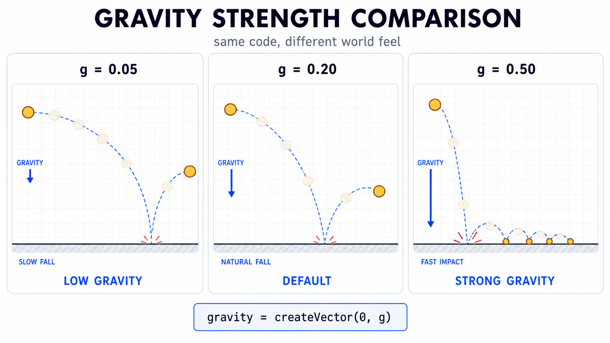

10주차 1교시 — 뉴턴 제2법칙과 applyForce() 패턴
강의 아웃라인: week-10-outline 다음 교시: week-10-period2-student (다중 힘, 질량 차이, 마찰력)
| 항목 | 내용 |
|---|---|
| 대상 | P5.js 입문자 (테크아트 전공) |
| 소요 시간 | 45분 |
| 핵심 도구 | P5.js Web Editor |
- 뉴턴 제2법칙(F=ma)을 코드 한 줄(
a = F / m)로 표현할 수 있다 -
applyForce()패턴으로 객체에 힘을 적용하고, 가속도가 누적되는 구조를 이해한다 - 중력을 벡터로 구현하고, 바닥 바운스와 에너지 손실까지 더해 자연스러운 자유낙하를 만든다
1교시는 applyForce() 패턴과 중력 하나에 집중합니다.
바람·질량·마찰력은 2교시에서 다룹니다.
도입
9주차 연결 — “가속도 직접 설정”의 한계
지난 9주차에서는 벡터를 활용해 위치-속도-가속도를 구현했습니다.
Mover에 중력처럼 작용하는 가속도를 직접 주어 공이 떨어지게
만들었습니다. 핵심 코드를 다시 살펴봅시다.
class Mover {
constructor(x, y) {
this.pos = createVector(x, y);
this.vel = createVector(0, 0);
this.acc = createVector(0, 0);
}
applyGravity() {
this.acc = createVector(0, 0.1);
}
update() {
this.vel.add(this.acc);
this.pos.add(this.vel);
this.acc.set(0, 0);
}
display() {
fill(175);
noStroke();
ellipse(this.pos.x, this.pos.y, 30);
}
}잘 동작합니다. 그런데 가속도를 어떻게 설정했는지 다시 살펴봅시다.
applyGravity() 안에서
this.acc = createVector(0, 0.1)로 수치를 직접
대입했습니다. ’아래 방향으로 0.1만큼 가속한다’는 결과는 얻지만,
왜 그렇게 가속하는지는 코드에 드러나지 않습니다. 단순히
’그렇게 지시했을 뿐’인 구조입니다.
현실에서 공이 아래로 떨어지는 이유는 중력이라는 힘 때문입니다. 바람이 불면 옆으로 밀리고, 바닥 위를 미끄러지면 마찰력이 속도를 줄입니다. 이 모든 현상의 근원이 바로 힘(Force)입니다.
9주차가 ’어떻게 움직이는가’에 관한 수업이었다면, 오늘은 ‘왜 움직이는가’, 즉 힘을 코드로 구현하는 데 초점을 둡니다. 1교시에서는 가장 기본적인 한 가지 힘, 중력만 다룹니다.
동기부여
뉴턴이 300여 년 전에 정립한 법칙을 코드 몇 줄로 구현할 수 있습니다.
미디어아트에서 물리 시뮬레이션은 자주 활용되는 기법입니다. 중력에 의해 떨어지는 파티클, 바람에 흩날리는 꽃잎, 자석처럼 끌어당기는 효과 — 이러한 ’자연스러운 움직임’의 핵심이 오늘 배울 힘입니다.
참고 교재인 Nature of Code 2장의 주제도 Forces(힘)입니다. 오늘 배우는 패턴은 13주차 파티클 시스템까지 계속 활용됩니다.
핵심 개념 1 — 뉴턴 제2법칙: 코드로 읽기
물리 수업이 아니라 코딩 수업이므로 뉴턴의 법칙을 코드 관점에서 살펴봅니다. 뉴턴의 운동 법칙은 세 가지입니다. 각각 한 줄로 정리한 뒤 그중 하나만 깊이 다룹니다.
한 줄 정리
- 제1법칙 (관성): ‘힘이 없으면 물체는 현재 상태를 유지한다’ — 9주차에서 이미 구현했습니다. 가속도를 0으로 두면 공이 일정한 속도로 직진했는데, 이것이 관성입니다. 별도로 추가할 작업은 없습니다.
- 제2법칙 (F=ma): ← 오늘의 학습 대상. 이를 자세히 다룹니다.
- 제3법칙 (작용-반작용): 벽을 밀면 벽도 나를 밀어내는 원리입니다. 오늘은 다루지 않습니다.
제2법칙 — F = ma → a = F / m
힘(F) = 질량(m) × 가속도(a). 이를 코드에 활용할 수 있는 형태로 변형하면 다음과 같습니다.
a = F / m
가속도는 힘을 질량으로 나눈 값입니다. 이 한 줄이 오늘의 핵심입니다.

이미지의 핵심은 같은 힘이라도 질량이 다르면 가속도가 달라진다는 점입니다. 가벼운 물체는 크게 가속하고, 무거운 물체는 작게 가속합니다.
9주차에서는 this.acc를 직접 설정했지만, 이제는
힘을 적용하면 가속도가 자동으로 계산되도록 구현합니다.
1교시에서는 질량을 1로 고정하므로 — a = F / 1 = F — 사실상
’힘 = 가속도’가 되는 단순한 상황에서 시작합니다. 질량을 다양하게 다루는
작업은 2교시에서 이어서 다룹니다.
질량이 3인 물체에 6의 힘을 주면 가속도는 얼마일까요?
답: 2. a = F/m = 6/3 = 2.
핵심 개념 2 — applyForce() 패턴: 힘을 적용하는 방법
이제 코드로 구현합니다. 9주차의 Mover 클래스에
힘을 받는 기능을 추가합니다. 완성 코드를 한 번에
보기보다, 가장 단순한 형태에서 출발해 필요한 지점마다
한 줄씩 추가합니다.
Step-by-Step 빌드업 — 가장 단순한 버전부터
v1. 가장 단순한 applyForce — 힘을 가속도로 바로 사용하기
처음 떠올릴 수 있는 가장 단순한 방식입니다.
applyForce(force) {
this.acc = force; // 힘 = 가속도?
}받은 힘을 곧바로 가속도로 사용하는 방식입니다. 단순하지만 두 가지 문제가 있습니다.
- 힘이 두 개일 때의 처리.
applyForce(gravity)다음에applyForce(wind)를 호출하면, 두 번째 호출이 첫 번째를 덮어씁니다. 중력이 사라지고 바람만 남게 되지만, 우리가 원하는 동작은 두 힘이 함께 작용하는 것입니다. - 질량이 반영되지 않습니다. 볼링공이든 탁구공이든 동일하게 가속합니다. 핵심 개념 1에서 살펴본 F=ma → a=F/m이 코드에 반영되지 않은 상태입니다.
두 문제를 차례로 해결해 봅시다.
v2. 누적하기 — = 대신
add
첫 번째 문제인 덮어쓰기부터 해결합니다. =을
add로 바꾸기만 하면 됩니다.
applyForce(force) {
this.acc.add(force); // 덮어쓰기 → 누적
}이제 applyForce(gravity)와
applyForce(wind)를 차례로 호출하면 두 힘이 벡터로
합산되어 acc에 누적됩니다. 9주차에서 배운 벡터 덧셈이 여기서
활용되는 것입니다.
한 줄만 변경했을 뿐인데 여러 힘의 동시 적용이 가능해졌습니다. 다만 두 번째 문제인 질량 무시가 아직 남아 있습니다.
v3. 질량 반영 — F를 m으로 나누기
F=ma → a=F/m을 코드에 반영할 차례입니다.
applyForce(force) {
let f = p5.Vector.div(force, this.mass); // a = F / m
this.acc.add(f);
}p5.Vector.div(force, this.mass)는 힘을 질량으로 나눠
가속도 f를 구하고, 그 값을 acc에 누적합니다.
9주차에서 배운 정적 메서드 패턴이 그대로 적용됩니다.
p5.Vector.sub, p5.Vector.mult와 마찬가지로
앞에 p5.Vector.가 붙은 안전한 버전입니다.
이제 질량 6의 볼링공과 질량 1의 탁구공에 같은 힘을 적용해도 서로 다르게 움직입니다. 거의 완성된 형태입니다.
다만 한 가지 문제가 더 남아 있습니다. 매 프레임 힘을 적용할 때 acc가 어떻게 변하는지 살펴봅시다.
v4. 매 프레임 초기화 —
acc.set(0, 0)
v3까지 구현하고 실행해 보면 처음 몇 초는 정상적으로 동작하다가, 공의 속도가 점점 비정상적으로 빨라집니다. 그 원인을 살펴봅시다.
프레임 1에서 applyForce(gravity)를 호출하면 acc = (0,
0.2). 프레임 2에서 다시 호출하면 acc = (0, 0.4). 프레임 100에서는 acc =
(0, 20). acc가 계속 누적되고 리셋되지 않는 구조이기
때문에 속도가 비정상적으로 커집니다.
해결책은 한 줄입니다. update() 끝에서 acc를 0으로
초기화하면 됩니다.
applyForce(force) {
let f = p5.Vector.div(force, this.mass);
this.acc.add(f);
}
update() {
this.vel.add(this.acc);
this.pos.add(this.vel);
this.acc.set(0, 0); // ← 매 프레임 끝에 초기화!
}applyForce()는 v3 그대로 두고, update()의
마지막에 this.acc.set(0, 0) 한 줄을 추가했습니다.
이 코드 구조에서 힘은 한 프레임 동안 acc에 누적된 뒤
초기화되는 값입니다. 계속 작용하는 힘처럼 보이게 하려면 매
프레임 다시 applyForce()를 호출해야 합니다.
이 v4가 완성 형태입니다. 이제 클래스 전체 코드를 보아도 구조가 한눈에 들어옵니다.
잠깐 점검 — 3프레임 동안 실제로 어떤 일이 일어나는가?
v4 코드의 동작을 머릿속으로 추측하지 말고, 숫자로 직접 따라가
봅시다. 초기 조건은 다음과 같습니다 —
pos=(200, 50), vel=(0, 0),
mass=1, gravity=(0, 0.2).
프레임 1
| 단계 | 연산 | 결과 |
|---|---|---|
| 시작 | acc=(0, 0), vel=(0, 0), pos=(200, 50) | — |
| applyForce(gravity) | acc.add(force/mass) = acc.add((0, 0.2)) | acc=(0, 0.2) |
| update — vel.add(acc) | vel = (0, 0) + (0, 0.2) | vel=(0, 0.2) |
| update — pos.add(vel) | pos = (200, 50) + (0, 0.2) | pos=(200, 50.2) |
| update — acc.set(0, 0) | acc 리셋 | acc=(0, 0) |
프레임 2
| 단계 | 연산 | 결과 |
|---|---|---|
| 시작 | acc=(0, 0), vel=(0, 0.2), pos=(200, 50.2) | — |
| applyForce(gravity) | acc.add((0, 0.2)) | acc=(0, 0.2) |
| vel.add(acc) | vel = (0, 0.2) + (0, 0.2) | vel=(0, 0.4) |
| pos.add(vel) | pos = (200, 50.2) + (0, 0.4) | pos=(200, 50.6) |
| acc.set(0, 0) | 리셋 | acc=(0, 0) |
프레임 3
| 단계 | 연산 | 결과 |
|---|---|---|
| applyForce(gravity) | acc.add((0, 0.2)) | acc=(0, 0.2) |
| vel.add(acc) | vel=(0, 0.6) | (점점 빨라짐) |
| pos.add(vel) | pos=(200, 51.2) | (한 프레임에 0.6 이동) |
핵심 관찰 3가지:
- vel은 누적되고, acc는 매 프레임 초기화됩니다. vel은 0 → 0.2 → 0.4 → 0.6으로 계속 커지지만, acc는 매번 0에서 시작해 0.2까지 증가한 뒤 다시 0으로 돌아옵니다. 두 변수의 역할이 서로 다릅니다.
- 위치 이동량이 점점 늘어납니다. 첫 프레임은 0.2, 두 번째는 0.4, 세 번째는 0.6. 이것이 가속의 의미입니다 — 같은 시간 동안 더 많이 이동하는 것입니다.
- acc.set(0, 0)을 생략하면? 프레임 1에서 acc=0.2, 프레임 2에서 acc=0.4(누적), 프레임 3에서 acc=0.6으로 증가합니다. vel이 급격히 커지고, 공이 짧은 시간 안에 화면 밖으로 벗어납니다.
이 표를 한 번 머릿속으로 그려 보면, 아래의 force ledger 그림이 왜 그런 구조인지 자연스럽게 이해됩니다.
applyForce() 메서드 추가 — 완성 코드
class Mover {
constructor(x, y) {
this.pos = createVector(x, y);
this.vel = createVector(0, 0);
this.acc = createVector(0, 0);
this.mass = 1;
}
applyForce(force) {
let f = p5.Vector.div(force, this.mass); // a = F / m
this.acc.add(f); // 가속도에 누적
}
update() {
this.vel.add(this.acc); // 가속도 → 속도
this.pos.add(this.vel); // 속도 → 위치
this.acc.set(0, 0); // 매 프레임 가속도 초기화!
}
display() {
fill(175);
noStroke();
ellipse(this.pos.x, this.pos.y, this.mass * 16);
}
}한 줄씩 살펴봅니다. 핵심은 네 군데입니다.
applyForce(force)
— 힘 벡터를 받는 메서드
applyForce(force)는 force라는 벡터를 매개변수로
받습니다. 이 force가 적용하려는 힘이며,
중력이 될 수도 있고 바람이 될 수도 있습니다. 메서드 이름 그대로 ’힘을
적용한다’는 의미입니다.
let f = p5.Vector.div(force, this.mass)
— F/m = a
뉴턴 제2법칙이 그대로 코드로 표현된 형태입니다. 힘(force)을 질량(this.mass)으로 나누면 가속도(f)가 됩니다.
9주차에서 p5.Vector.sub(a, b) 형태의 정적
메서드로 통일했습니다. div()도 마찬가지로
앞에 p5.Vector.가 붙은 정적 메서드 버전을
사용합니다. 여기서는 ’원본 벡터를 변경하지 않는 안전한 버전’으로
기억하면 됩니다. 익숙해지면 차이가 자연스럽게 보입니다.
9주차의 p5.Vector.sub와 오늘의
p5.Vector.div는 패턴이 동일합니다. 이러한 일관성이 학습
부담을 줄여 줍니다.
this.acc.add(f) —
가속도에 누적
계산한 가속도를 this.acc에 add합니다.
set이 아니라 add라는 점이 핵심입니다.
add를 사용하는 이유는 힘이 하나로 한정되지 않기 때문입니다. 중력,
바람, 마찰력 등 여러 힘이 동시에 작용할 수 있습니다. 각 힘마다
applyForce()를 호출하면 그 결과가 가속도에 순서대로
더해지는데, 이것이 바로 힘의 누적입니다.
1교시에서는 중력 하나만 다루지만, 이 add의 의미는
2교시에서 본격적으로 드러납니다. 지금은 미리 토대를 마련해 두는
셈입니다. 물리학에서는 이를 합력(net force)이라
부릅니다. 중력 + 바람 + 마찰력 = 합력이며, 이 합력이 최종 가속도를
결정합니다.
mover.applyForce(gravity)를 같은 프레임에 두 번 호출하면
어떻게 될까요?
답: 가속도에 두 번 누적되어 효과가 두 배가 됩니다. 중력이 두 배 강해진 것처럼 더 빨리 떨어집니다.
this.acc.set(0, 0)
— 매 프레임 가속도 초기화
update()의 마지막에 this.acc.set(0, 0)을
두어 가속도를 0으로 초기화합니다.
그 이유는 이 코드에서 힘을 매 프레임 새로 누적하는 값으로 다루기 때문입니다. 이전 프레임의 힘이 남아 있으면 가속도가 계속 누적되어 물체의 속도가 비정상적으로 커집니다.
비유하자면, 코드에서 바람을 한 번만 적용하면 그 프레임에만 물체를
밀어냅니다. 계속 바람을 맞는 효과를 내려면 매 프레임 바람을 다시
적용해야 합니다. 따라서 매 프레임 가속도를 초기화한 뒤
applyForce()로 힘을 다시 적용합니다.
applyForce 흐름 정리
이 패턴의 흐름을 도식으로 정리하면 다음과 같습니다.
매 프레임(draw 함수):
1. applyForce(중력) → acc에 누적
applyForce(바람) → acc에 또 누적 ← 2교시 미리보기
2. update() → vel += acc, pos += vel
3. acc = (0, 0) → 초기화
4. display() → 화면에 그리기
다음 프레임:
1. 다시 applyForce(중력) → 새로 시작
...applyForce()로 힘을 적용하면, 클래스가 가속도 → 속도 → 위치를 자동으로 계산합니다. Nature of Code에서 가장 핵심적인 패턴이며, 이 패턴만 익히면 어떤 종류의 힘이든 적용할 수 있습니다.
한 프레임 안의 힘 장부(Force Ledger) — 시각적 이해 틀
앞서 설명한 ‘누적 → 사용 → 초기화’ 과정을 한 화면에 정리합니다. 매 프레임 내부에서 일어나는 작업을 장부처럼 기록하면 다음과 같습니다.

이 그림이 applyForce()를 이해하는 핵심
구조입니다. applyForce는 새로운 문법이라기보다
‘장부에 한 줄을 더 적는’ 작업에 가깝습니다. 장부의
항목이 늘어도 update()의 코드는 변하지 않으므로, 힘이 1개든
5개든 코드 양은 거의 동일합니다.
현재 예제는 중력 한 줄만 기록된 단순한 장부입니다. 2교시에서 바람과 마찰력이 추가되어도 장부의 양식 자체는 그대로 유지됩니다.
핵심 개념 3 — 중력 적용 + 바닥 바운스
applyForce() 패턴을 익혔으니 이제 실제로 힘을 만들어 봅시다. 첫 번째 힘은 중력(gravity)입니다. 이 한 가지 힘만으로 자유낙하, 바운스, 에너지 손실까지 모두 구현합니다.
이번에도 단계적으로 구축합니다. 단순한 자유낙하에서 출발해 화면 밖으로 사라지는 문제를 확인하고, 바운스를 추가한 뒤 에너지 손실까지 더해 갑니다.
Step 1. 중력 벡터 만들기
중력은 모든 물체를 아래로 당기는 힘입니다. 9주차에서 배운 벡터로 어떻게 표현할 수 있을까요?
p5.js 좌표계에서는 아래 방향이 y가 커지는 방향이므로, 중력 벡터는 (0, 양수)로 표현합니다.
let gravity = createVector(0, 0.2);x 방향이 0인 이유는 좌우로는 힘이 작용하지 않기 때문이고, y 방향만
0.2로 두는 이유는 아래로 당기는 힘이기 때문입니다. 9주차에서 배운
createVector가 그대로 사용되며, 새로 추가되는
문법은 없습니다.
0.2는 예제에서 임의로 정한 값입니다. 값이 작으면 약한 중력처럼, 크면 강한 중력처럼 보이며, 이번 예제에서는 0.2를 기본값으로 사용합니다.
단, 오늘은 mass = 1로 고정한 단순 모델이므로 이 값이
화면에서는 중력 가속도처럼 보입니다. 실제 현실의
중력(F = mg)과의 차이는 2교시에서 명확히 구분합니다.
Step 2. 중력을 객체에 적용 — 자유낙하
이제 매 프레임 mover에 중력을 적용해 봅시다.
let mover;
function setup() {
createCanvas(400, 400);
mover = new Mover(200, 50);
}
function draw() {
background(220);
// 매 프레임 — 새로 중력을 적용
let gravity = createVector(0, 0.2);
mover.applyForce(gravity);
mover.update();
mover.display();
}실행 결과: - 원이 위(200, 50)에서 시작하여 점점 빨라지며 아래로 떨어짐 - 화면 밖으로 사라짐 (아직 바닥 처리 없음)
mover.applyForce(gravity)가 매 프레임 호출되므로 힘도 매
프레임 새로 적용됩니다. 그 결과 가속도가 acc에 계속
더해지고(acc.add(f)), 속도가 점점 빨라지며 위치 변화량도
점점 커집니다. 자유낙하가 완성된 것입니다.
다만 화면 밖으로 사라지는 문제가 있습니다. 이를 어떻게 해결할 수 있을까요?
9주차에서 this.acc = createVector(0, 0.1)로 가속도를
직접 설정한 결과와 외형은 비슷해 보입니다. 하지만 내부 구조가 완전히
다릅니다. 이제는 힘 → 가속도 → 속도 → 위치라는 물리적
흐름이 명확히 구축된 상태입니다. 2교시에서 다른 힘을 추가할 때 이 구조의
가치가 본격적으로 드러납니다.
9주차 vs 10주차 — BEFORE/AFTER 코드 비교
9주차 방식과 10주차 방식을 구체적으로 비교해 봅시다. 무엇이 바뀌었고 무엇이 유지되었는지 한눈에 확인할 수 있습니다.
| 구간 | 9주차 (직접 설정) | 10주차 (applyForce) | 차이 |
|---|---|---|---|
| 가속도 부여 | this.acc = createVector(0, 0.1) |
mover.applyForce(createVector(0, 0.2)) |
“가속도 = X” → “힘을 X로 적용” |
| 다음 힘 추가 | this.acc.x = 0.05 (수동) |
mover.applyForce(wind) (한 줄 추가) ⟵ 2교시 |
누적 자동, 한 줄로 끝 |
| update() 본체 | vel.add(acc); pos.add(vel); |
vel.add(acc); pos.add(vel); acc.set(0,0); |
acc.set(0,0) 한 줄만 추가 |
| 메서드 시그니처 | (없음) | applyForce(force) 4줄 |
새 메서드 1개 |
정리하면 코드가 추가된 곳은 두 군데입니다.
applyForce(force)메서드 본체 4줄update()끝에this.acc.set(0, 0)한 줄
이 작은 변화 덕분에, 2교시에서 바람·마찰력을 추가할 때 클래스
본체를 한 줄도 수정하지 않아도 됩니다. draw()에서
applyForce()를 한 번 더 호출하기만 하면 됩니다. 9주차
방식이라면 매번 this.acc.x += ...처럼 클래스 외부에서 직접
조립해야 했습니다.
Step 3. 바닥
바운싱 추가 — *= -0.9의 두 가지 역할
공이 화면 밖으로 사라지지 않도록 바닥에서 튕기는 동작을 추가합니다.
edges() 메서드를 Mover 클래스에
추가합니다.
edges() {
let r = 15; // 원의 반지름
let floor = height - r; // 원의 아래쪽이 닿는 바닥 위치
if (this.pos.y > floor) {
this.pos.y = floor; // 원이 화면 밖으로 반쯤 나가지 않게 보정
if (abs(this.vel.y) > 1) {
this.vel.y *= -0.9; // 속도 반전 + 에너지 손실
} else {
this.vel.y = 0; // 아주 작은 튐은 멈춘 것으로 처리
}
}
}floor = height - r로 바닥을 설정하는 이유는 원의
중심이 아니라 원의 아래쪽이 바닥에
닿아야 하기 때문입니다. height를 그대로 사용하면 원의
절반이 화면 밖으로 나갑니다.
핵심은 this.vel.y *= -0.9 한 줄로, 두 가지 작업이 동시에
일어납니다. 이를 분해해 보면 다음과 같습니다.
*= -1부분은 y 속도를 반전시킵니다. 아래로 이동하던 공이 위로 튀어 오르는 동작이며, 9주차 바운싱 볼에서 다룬 방식과 동일합니다.* 0.9부분은 속도를 90%로 감소시킵니다. 튈 때마다 10%씩 줄어드는 셈이며, 이것이 에너지 손실입니다.
현실에서도 공은 바닥에 튈 때마다 점점 낮아집니다. 튈 때마다 에너지를 잃기 때문입니다. 0.9 대신 다른 숫자로 바꿔 보면 다음과 같은 차이가 나타납니다.
| 계수 | 효과 |
|---|---|
*= -1.0 |
같은 높이로 계속 튕김 (에너지 보존, 비현실적) |
*= -0.9 |
점진적으로 낮아지다가 작은 튐은 정지 처리 (자연스러움) |
*= -0.5 |
한 번에 절반으로 감소해 빠르게 정지 |
*= -0.0 |
닿자마자 정지 (점성이 큰 표면에 가까운 효과) |
숫자로 보는 바운스 —
*= -0.9 실제 동작
추상적인 설명 대신 실제로 어떻게 정지하는지 숫자로 살펴봅시다. 공이 바닥에 닿는 순간의 vel.y를 10이라 가정합니다(빠른 속도에 해당).
| 바운스 횟수 | 충돌 직전 vel.y | *= -0.9 후 vel.y |
위로 튀는 속도 |
|---|---|---|---|
| 1회 | 10 | -9 | 9 |
| 2회 | 9 | -8.1 | 8.1 |
| 3회 | 8.1 | -7.29 | 7.29 |
| 4회 | 7.29 | -6.56 | 6.56 |
| 5회 | 6.56 | -5.90 | 5.90 |
| 10회 | 약 4.30 | 약 -3.87 | 3.87 |
| 20회 | 약 1.51 | 약 -1.36 | 1.36 |
| 30회 | 약 0.53 | 약 -0.48 | 0.48 |
매번 10%씩 감소하므로 속도는 0.9의 거듭제곱으로
줄어듭니다. 30회 튀면 초기 속도의 약 5%, 50회 정도면 거의 정지에 가까운
수준입니다. 다만 중력이 계속 작용하면 미세한 떨림이 남을 수 있으므로,
코드에서는 abs(this.vel.y) <= 1인 경우
0으로 고정해 정지 상태로 처리합니다.
0.9 대신 0.5를 사용하면? 매번 속도가 절반으로 감소합니다. 1회=5, 2회=2.5, 3회=1.25로 5회 만에 거의 정지합니다. 점성이 큰 표면에 떨어지는 효과에 가깝습니다.
0.99를 사용하면? 매번 1%만 감소하므로 100회 튀어도 절반 수준까지만 줄어듭니다. 거의 멈추지 않고 오래 튀는 효과가 나며, 이러한 미세한 차이가 작품의 분위기를 좌우합니다.
function draw() {
background(220);
let gravity = createVector(0, 0.2);
mover.applyForce(gravity);
mover.update();
mover.edges(); // 바닥 처리 추가!
mover.display();
}실행 결과: - 원이 떨어졌다가 바닥에서 튕김 - 튈 때마다 점점 낮아지다가 작은 튐은 정지 처리됨 - 자연스러운 물리 시뮬레이션이 구현된 형태
한 가지 힘(중력)과 한 가지 충돌 처리(바운스)만으로 자연스러운
움직임이 구현됩니다. 추가한 코드는 applyForce 메서드와
edges() 메서드 두 개입니다.
Step 4. 중력 강도 변경 — 같은 코드, 다른 움직임
한 가지 사례를 더 살펴봅니다. 중력 강도를 변경하면 단 하나의 숫자만 바뀌어도 움직임의 속도와 무게감이 달라집니다.
let gravity = createVector(0, 0.05); // 약한 중력
let gravity = createVector(0, 0.2); // 기본값
let gravity = createVector(0, 0.5); // 강한 중력0.05로 설정하면 공이 천천히 떨어져 달 표면처럼
약한 중력으로 보입니다. 0.5로 설정하면 빠르게
떨어져 강한 중력 환경처럼 보입니다. 정확한 천체 물리
수치가 아니라 작품에서 체감 차이를 만들기 위한 비유로 이해하면
됩니다.
9주차에서 this.acc.y = 0.1로 가속도를 직접 설정했던
방식과 비교해 봅시다. 9주차는 ’가속도’를 사용했고, 오늘은 ’힘’을
사용했습니다. 결과는 비슷해 보여도 2교시에서 질량을 도입하면
‘같은 힘에 서로 다른 가속도’가 가능해집니다. 9주차
방식으로는 구현할 수 없었던 동작입니다.
gravity = createVector(0, 0.2)에서 0.2를 0.5로 바꾸면
공의 움직임은 어떻게 변할까요?
답: 중력이 더 강해지므로 공이 더 빨리 떨어집니다. 같은 시간 동안 더 많이 가속하기 때문입니다. 약한 중력(0.05) → 기본값(0.2) → 강한 중력(0.5)으로 갈수록 체감 차이가 뚜렷하게 나타납니다.
실습
실습 1:
Mover에 중력만 적용 → 자유낙하 + 바닥 바운스
class Mover {
constructor(x, y) {
this.pos = createVector(x, y);
this.vel = createVector(0, 0);
this.acc = createVector(0, 0);
this.mass = 1;
}
applyForce(force) {
let f = p5.Vector.div(force, this.mass);
this.acc.add(f);
}
update() {
this.vel.add(this.acc);
this.pos.add(this.vel);
this.acc.set(0, 0);
}
edges() {
let r = 15;
let floor = height - r;
if (this.pos.y > floor) {
this.pos.y = floor;
if (abs(this.vel.y) > 1) {
this.vel.y *= -0.9;
} else {
this.vel.y = 0;
}
}
}
display() {
fill(100, 150, 255);
noStroke();
ellipse(this.pos.x, this.pos.y, 30);
}
}
let mover;
function setup() {
createCanvas(400, 400);
mover = new Mover(200, 50);
}
function draw() {
background(220);
let gravity = createVector(0, 0.2);
mover.applyForce(gravity);
mover.update();
mover.edges();
mover.display();
}공이 떨어진 뒤 바닥에서 튕기며, 점점 낮아지다가 작은 튐은 정지로 처리됩니다. 중력 하나만으로 자연스러운 바운싱이 구현됩니다.
실습 2: 바운스
계수 비교 — -0.9 vs -1.0 vs
-0.5
edges() 안의 -0.9 값만 바꿔 가며
비교합니다. 같은 코드에서 숫자 하나의 차이가 서로 다른 운동 특성을
만들어 냅니다.

// edges() 안의 이 줄만 바꿉니다.
this.vel.y *= -1.0; // 손실 0%같은 높이로 계속 튕깁니다. 비현실적이지만 핀볼 게임에 가까운 효과입니다.
// edges() 안의 이 줄만 바꿉니다.
this.vel.y *= -0.9; // 손실 10%현실의 공처럼 점점 낮아지며, 작은 튐은 정지 처리됩니다.
// edges() 안의 이 줄만 바꿉니다.
this.vel.y *= -0.5; // 손실 50%한 번 튄 뒤 거의 정지합니다. 진흙이나 점토 위에 떨어지는 효과에 가깝습니다.
세 가지 설정을 빠르게 전환해 보면, ’계수 하나로 표면 재질이 바뀐다’는 점을 시각적으로 체감할 수 있습니다.
실습 3: 중력값 변경 — “달과 지구와 목성”
이번에는 중력 강도를 변경합니다. gravity 한 줄만
수정하면 됩니다.

// 실습 3-A: 약한 중력
let gravity = createVector(0, 0.05);// 실습 3-B: 기본값
let gravity = createVector(0, 0.2);// 실습 3-C: 강한 중력
let gravity = createVector(0, 0.5);약한 값에서는 공이 천천히 떨어지며 높이 튕깁니다. 강한 값에서는 빠르게 떨어지며 한두 번 튕긴 뒤 정지합니다. 숫자 하나로 운동 특성이 바뀌는 셈입니다.
실습 4: 잔상 효과로 궤적 시각화
background(220) 대신 반투명 사각형을 사용해 봅니다.
5주차에 배운 잔상 효과를 응용해 공의 궤적을 시각화하는
방법입니다.
function draw() {
// background(220) 지우고 — 잔상으로 교체
fill(220, 220, 220, 30); // alpha 30 = 잔상 진하기
noStroke();
rect(0, 0, width, height);
let gravity = createVector(0, 0.2);
mover.applyForce(gravity);
mover.update();
mover.edges();
mover.display();
}공의 궤적이 흐릿하게 남습니다. 처음에는 점들 사이가 좁지만(느린 속도), 점점 멀어집니다(속도 증가). 가속의 정의가 시각적으로 드러나는 장면이며, F=ma를 눈으로 확인하는 순간입니다.
alpha 값(30)을 더 작게 하면 궤적이 오래 남고, 크게 하면 빠르게 사라집니다. 60 → 90 → 120으로 키워 보면 잔상이 거의 남지 않습니다.
정리
핵심 4줄 요약
| 개념 | 핵심 | 코드 |
|---|---|---|
| 뉴턴 제2법칙 | 힘 → 가속도 | a = F / m |
| applyForce 패턴 | 힘을 누적 | this.acc.add(p5.Vector.div(force, mass)) |
| 매 프레임 초기화 | acc를 다음 프레임 전에 비움 | this.acc.set(0, 0) |
| 바운스 손실 | 에너지 일부 잃음 | this.vel.y *= -0.9 |
힘 → 가속도 → 속도 → 위치. 9주차의 가속도 직접 설정 위에 ’힘’이라는 한 층이 추가된 구조입니다.
자주 묻는 질문
동작은 동일합니다. 다만 set(0, 0)은 기존 벡터 객체를
재사용하고, createVector()는 새 객체를 매 호출마다
생성합니다. 매 프레임 실행되는 코드이므로 set()이 더
효율적입니다.
0으로 나누는 연산이 되어 오류가 나거나 무한대 값이 생길 수 있습니다.
이 시뮬레이션 모델에서는 mass를 0으로 두지 않고, 최소 0.1
이상으로 설정합니다. 2교시에서는 random(1, 5)처럼 안전한
범위에서 질량을 부여합니다.
가능합니다. 힘은 단순한 벡터이므로 임의의 방향과 크기로 정의할 수 있습니다. 마우스를 향해 끌어당기는 힘, 무작위 방향으로 밀치는 힘 등 다양한 형태의 힘을 구현할 수 있으며, 2교시에서 바람과 마찰력을 다룹니다.
1교시에서는 ‘applyForce + 중력’ 패턴 자체에 집중하기 위함입니다.
질량이 1이면 a = F/1 = F이므로 사실상 힘 = 가속도가 됩니다.
그래서 1교시는 9주차처럼 가속도를 직접 다루는 단순한 상황에 가깝습니다.
2교시에서는 질량을 다양화하여 본격적인 차이를 확인합니다.
흔한 실수 3가지
실습 중 자주 마주치는 오류 패턴입니다. 아래 표에서 원인과 수정 방법을 확인합니다.
| # | 증상 | 원인 | 수정 방법 |
|---|---|---|---|
| 1 | 공이 화면 밖으로 사라지고 돌아오지 않음 | mover.edges() 호출 누락 또는 update()
이후에 호출하지 않음 |
update() 뒤에 edges()를 호출 |
| 2 | 첫 프레임에 공이 사라짐 | applyForce(gravity)가 draw가 아닌 setup에 위치 |
applyForce()는 매 프레임 작용해야 하므로 draw 안에
배치 |
| 3 | 공이 화면 아래로 반쯤 묻히거나 미세하게 계속 떨림 | 바닥을 height로 설정하거나 작은 바운스를 0으로 고정하지
않음 |
floor = height - r로 보정하고, 작은
vel.y는 0으로 처리 |
2교시 예고
1교시에서는 중력 하나와 질량 1인 객체 하나만 다뤘습니다. 2교시에서는 다음 세 가지를 차례로 추가합니다.
- 바람 —
applyForce()를 두 번 호출했을 때 힘이 누적된다는 의미를 확인합니다. - 질량 — 같은 힘에 다르게 반응하는 객체들을 동시에 만듭니다. 볼링공과 탁구공의 비유가 코드로 구현됩니다.
- 마찰력 — 자연스럽게 정지시키는 힘이며, ’브레이크’에 비유해 설명합니다.
1교시에서 만든 4줄짜리 applyForce 메서드는 2교시에서도
그대로 사용합니다. 새 힘을 추가해도
Mover의 핵심 코드는 그대로입니다. 9주차의
pos.add(vel)이 그랬던 것과 같은 패턴입니다.